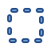
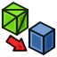
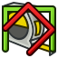
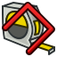

Part Workbench/cs

Úvod
 Pracovní plocha Part poskytuje tradiční pracovní postup konstruktivní geometrie těles (CSG). V tomto pracovním postupu je každý objekt samostatným tělesem. Pracovní plocha Part může vytvářet z parametricky definovaných náčrtů pomocí nástrojů jako Vysunutí, Rotace, Profilování atd. Kromě toho lze také vytvářet základní primitivní tělesa, jako jsou krychle, válec atd. Tyto objekty lze kombinovat pomocí booleovských operací a vytvářet tak složitější tělesa.
Pracovní plocha Part poskytuje tradiční pracovní postup konstruktivní geometrie těles (CSG). V tomto pracovním postupu je každý objekt samostatným tělesem. Pracovní plocha Part může vytvářet z parametricky definovaných náčrtů pomocí nástrojů jako Vysunutí, Rotace, Profilování atd. Kromě toho lze také vytvářet základní primitivní tělesa, jako jsou krychle, válec atd. Tyto objekty lze kombinovat pomocí booleovských operací a vytvářet tak složitější tělesa.
Pracovní plocha Part může také vytvářet objekty, které nejsou tělesy, jako jsou plochy, skořepiny a objekty pouze s hranami nebo vrcholy. Poskytuje také řadu univerzálních nástrojů pro manipulaci s geometrií, ověřování geometrie a vytváření kopií.
 Pracovní plocha PartDesign používá alternativní postup pro vytváření těles. Podrobné srovnání pracovní plochy Part a Part Design najdete v článku Part a Part Design.
Pracovní plocha PartDesign používá alternativní postup pro vytváření těles. Podrobné srovnání pracovní plochy Part a Part Design najdete v článku Part a Part Design.
{kind=link}
Nástroje
Panel nástrojů Pevná tělesa
 Krychle: Vytvoří krabici.
Krychle: Vytvoří krabici.
 Válec: Vytvoří válec.
Válec: Vytvoří válec.
 Koule: Vytvoří kouli.
Koule: Vytvoří kouli.
 Kužel: Vytvoří kužel.
Kužel: Vytvoří kužel.
 Anuloid: Vytvoří anuloid.
Anuloid: Vytvoří anuloid.
 Trubka: Vytvoří trubku.
Trubka: Vytvoří trubku.
 Základní tvary: Nástroj pro vytvoření jednoho z následujících základních tvarů:
Základní tvary: Nástroj pro vytvoření jednoho z následujících základních tvarů:
- Rovina: Vytvoří rovinu.
{kind=link}
- Elipsoid: Vytvoří elipsoid.
{kind=link}
- Hranol: Vytvoří hranol.
{kind=link}
- Klín: Vytvoří klín.
{kind=link}
 Šroubovice: Vytvoří šroubovici.
Šroubovice: Vytvoří šroubovici.
- Spirála: Vytvoří spirálu.
{kind=link}
- Kružnice: Vytvoří kruhový oblouk.
{kind=link}
- Elipsa: Vytvoří eliptický oblouk.
{kind=link}
- Bod: Vytvoří bod.
{kind=link}
- Čára: Vytvoří čáru.
{kind=link}
 Pravidelný mnohoúhelník: Vytvoří pravidelný mnohoúhelník.
Pravidelný mnohoúhelník: Vytvoří pravidelný mnohoúhelník.
 Tvorba tvarů: Vytváří tvary z různých základních prvků.
Tvorba tvarů: Vytváří tvary z různých základních prvků.
Panel nástrojů Part
 Nový náčrt: Vytvoří nový náčrt a otevře dialogové okno Sketcheru pro jeho úpravy.
Nový náčrt: Vytvoří nový náčrt a otevře dialogové okno Sketcheru pro jeho úpravy.
 Vysunutí: Extruduje rovinné plochy.
Vysunutí: Extruduje rovinné plochy.
 Orotování: Vytvoří těleso otáčením objektu (který není tělesem) kolem osy.
Orotování: Vytvoří těleso otáčením objektu (který není tělesem) kolem osy.
 Zrcadlit: Zrcadlí vybraný objekt přes zrcadlovou rovinu.
Zrcadlit: Zrcadlí vybraný objekt přes zrcadlovou rovinu.
 Změna velikosti: Změní rozměry jednoho nebo více tvarů. introduced in 1.0
Změna velikosti: Změní rozměry jednoho nebo více tvarů. introduced in 1.0
 Zaoblení: Zaoblí hrany objektu.
Zaoblení: Zaoblí hrany objektu.
 Zkosení: Zkosí hrany objektu.
Zkosení: Zkosí hrany objektu.
 Plocha z drátů: Vytvoří plochu ze sady drátů (obrysů).
Plocha z drátů: Vytvoří plochu ze sady drátů (obrysů).
 Zakřivená plocha: Vytvoří zakřivenou plochu.
Zakřivená plocha: Vytvoří zakřivenou plochu.
 Profilování: Přechody mezi jednotlivými profily.
Profilování: Přechody mezi jednotlivými profily.
 Tažení: Provede vytažení jednoho nebo více profilů podél dráhy.
Tažení: Provede vytažení jednoho nebo více profilů podél dráhy.
 Řez: Vytvoří řez průnikem objektu s rovinou řezu.
Řez: Vytvoří řez průnikem objektu s rovinou řezu.
 Řezy: Vytvoří jeden nebo více řezů objektem.
Řezy: Vytvoří jeden nebo více řezů objektem.

 Odsazení:
Odsazení:
- 3D odsazení: Vytvoří rovnoběžný obrazec v určité vzdálenosti od originálu.
- 2D Odsazení: Vytvoří rovnoběžnou přímku v určité vzdálenosti od původní přímky nebo zvětší/zmenší rovinnou plochu.
{kind=link}
 Tloušťka: Vydlabe dutinu v plném tělesu.
Tloušťka: Vydlabe dutinu v plném tělesu.
 Průmět na povrch: Promítá logo, text nebo libovolný tvar, drát či hranu na povrch.
Průmět na povrch: Promítá logo, text nebo libovolný tvar, drát či hranu na povrch.
 Vzhled jednotlivých ploch: Přiřazuje barvy jednotlivým plochám objektů.
Vzhled jednotlivých ploch: Přiřazuje barvy jednotlivým plochám objektů.
Panel nástrojů Booleovských operací
 Sloučení:
Sloučení:
- Sloučit: Vytvoří sloučeninu z vybraných objektů.
 Rozložit sloučeninu: Rozloží sloučeniny.
Rozložit sloučeninu: Rozloží sloučeniny.
 Filtr sloučeniny: Rozloží sloučeniny na jednotlivé části.
Filtr sloučeniny: Rozloží sloučeniny na jednotlivé části.
 Boolovská operace: Provádí boolovské operace se dvěma objekty.
Boolovská operace: Provádí boolovské operace se dvěma objekty.
 Oříznout: Vyřízne jeden objekt z druhého.
Oříznout: Vyřízne jeden objekt z druhého.
 Sjednocení: Spojí dva nebo více objektů.
Sjednocení: Spojí dva nebo více objektů.
 Průnik: Vytvoří průnik dvou objektů.
Průnik: Vytvoří průnik dvou objektů.
 Spojení:
Spojení:
- Propojit tvary: Propojí vnitřní prostory objektů ohraničených stěnami.
 Vložit tvary: Vloží objekt s ohraničením do jiného objektu s ohraničením.
Vložit tvary: Vloží objekt s ohraničením do jiného objektu s ohraničením.
 Tvar výřezu: Vytvoří ve stěně objektu výřez pro jiný objekt se stěnou.
Tvar výřezu: Vytvoří ve stěně objektu výřez pro jiný objekt se stěnou.
 Rozdělení:
Rozdělení:
- Booleovské fragmenty: Vytvoří všechny části získané pomocí booleovských operací.
 Rozříznout: Rozřízne a rozdělí objekt tak, že ho protne s jinými objekty.
Rozříznout: Rozřízne a rozdělí objekt tak, že ho protne s jinými objekty.
 Rozřezat na složený objekt: Rozřeže objekt tak, že ho protne s jinými objekty.
Rozřezat na složený objekt: Rozřeže objekt tak, že ho protne s jinými objekty.
 Booleovské XOR: Odstraní prostor sdílený sudým počtem objektů.
Booleovské XOR: Odstraní prostor sdílený sudým počtem objektů.
 Zkontrolovat geometrii: Zkontroluje vybraný objekt, zda neobsahuje chyby v geometrii.
Zkontrolovat geometrii: Zkontroluje vybraný objekt, zda neobsahuje chyby v geometrii.
 Odstranění prvků: Odstraní prvky z objektu.
Odstranění prvků: Odstraní prvky z objektu.
Ostatní nástroje

Výběrový obdélník: Vybere plochy z obdélníkové oblasti.
{kind=link}

Tvar ze sítě: Vytváří tvary ze síťových objektů.
{kind=link}
 Body z tvaru: Vytvoří objekty typu body z geometrických objektů.
Body z tvaru: Vytvoří objekty typu body z geometrických objektů.
 Převést na těleso: Vytvoří tělesa z tvarových objektů.
Převést na těleso: Vytvoří tělesa z tvarových objektů.
 Obrácené tvary: Vytvoří parametrické kopie vybraných objektů s obrácenými normálami ploch.
Obrácené tvary: Vytvoří parametrické kopie vybraných objektů s obrácenými normálami ploch.
- Kopie:
 Jednoduché kopírování: Vytvoří neparametrické kopie objektů.
Jednoduché kopírování: Vytvoří neparametrické kopie objektů.
- Transformovaná kopie: Vytvoří neparametrické kopie objektů. Je určena pro objekty vnořené do kontejnerů.
{kind=link}
- Kopírování prvků tvaru: Vytvoří neparametrické kopie dílčích prvků: vrcholů, hran a ploch.
{kind=link}
- Vylepšit tvar: Vytvoří parametrické kopie vybraných objektů s vylepšeným tvarem. Odstraní zbytečné hrany z rovinných a válcových ploch.
{kind=link}
 Nastavit toleranci: vytvoří parametrickou kopii vybraných objektů, přičemž všechny obsažené tolerance budou nastaveny alespoň na určitou minimální hodnotu. introduced in 1.1
Nastavit toleranci: vytvoří parametrickou kopii vybraných objektů, přičemž všechny obsažené tolerance budou nastaveny alespoň na určitou minimální hodnotu. introduced in 1.1
 Persistentní řez: Vytvoří trvalé řezy objektů a sestav.
Persistentní řez: Vytvoří trvalé řezy objektů a sestav.
 Připojení: Připojí objekt k jednomu nebo více dalším objektům.
Připojení: Připojí objekt k jednomu nebo více dalším objektům.
Zastaralé nástroje
 Importovat soubor CAD...: Importuje soubory ve formátech *.IGES, *.STEP nebo *.BREP. Není k dispozici v 1.1 and above.
Importovat soubor CAD...: Importuje soubory ve formátech *.IGES, *.STEP nebo *.BREP. Není k dispozici v 1.1 and above.
 Exportovat soubor CAD...: Exportuje do souborů *.IGES, *.STEP nebo *.BREP. Není k dispozici v 1.1 and above.
Exportovat soubor CAD...: Exportuje do souborů *.IGES, *.STEP nebo *.BREP. Není k dispozici v 1.1 and above.
Měření
Nástroj  Něření nahrazuje níže uvedené nástroje. introduced in 1.0
Něření nahrazuje níže uvedené nástroje. introduced in 1.0
- Lineární měření: Vytvoří lineární měření. Není k dispozici v 1.0 and above.
{kind=link}
 Measure Angular: Creates an angular measurement. Not available in 1.0 and above.
Measure Angular: Creates an angular measurement. Not available in 1.0 and above.
- Measure Refresh: Updates all measurements. Not available in 1.0 and above.
{kind=link}
- Clear All and View Measure Clear All: Clears all measurements. Not available in 1.0 and above.
{kind=link}

Toggle All and View Measure Toggle All: Shows or hides all measurements. Not available in 1.0 and above.
{kind=link}

Toggle 3D: Shows or hides 3D measurements. Not available in 1.0 and above.
{kind=link}
- Toggle Delta: Shows or hides delta measurements. Not available in 1.0 and above.
{kind=link}
Preferences
 Preferences: Preferences for the Part Workbench.
Preferences: Preferences for the Part Workbench. Import Export Preferences: Preferences for importing from and exporting to different file formats.
Import Export Preferences: Preferences for importing from and exporting to different file formats.- Fine-tuning: Some extra parameters to fine-tune Part behavior.
Skriptování
Viz Part skriptování.
Návody
- Import z formátu STL nebo OBJ: Jak importovat soubory STL/OBJ do FreeCADu
- Export do formátu STL nebo OBJ: Jak exportovat soubory STL/OBJ z FreeCADu
- Tutoriál Whiffle Ball: Jak používat pracovní plochu Part
- Creation and modification: New Sketch, Extrude, Revolve, Mirror, Scale, Fillet, Chamfer, Face From Wires, Ruled Surface, Loft, Sweep, Section, Cross-Sections, 3D Offset, 2D Offset, Thickness, Project on Surface, Appearance per Face
- Boolean: Compound, Explode Compound, Compound Filter, Boolean Operation, Cut, Union, Intersection, Connect Shapes, Embed Shapes, Cutout Shape, Boolean Fragments, Slice Apart, Slice to Compound, Boolean XOR, Check Geometry, Defeaturing
- Other tools: Box Selection, Shape From Mesh, Points From Shape, Convert to Solid, Reverse Shapes, Simple Copy, Transformed Copy, Shape Element Copy, Refine Shape, Set Tolerance, Persistent Section Cut, Attachment
- Preferences: Preferences, Fine tuning
- Getting started
- Installation: Download, Windows, Linux, Mac, Additional components, Docker, AppImage, Ubuntu Snap
- Basics: About FreeCAD, Interface, Mouse navigation, Selection methods, Object name, Preferences, Workbenches, Document structure, Properties, Help FreeCAD, Donate
- Help: Tutorials, Video tutorials
- Workbenches: Std Base, Assembly, BIM, CAM, Draft, FEM, Inspection, Material, Mesh, OpenSCAD, Part, PartDesign, Points, Reverse Engineering, Robot, Sketcher, Spreadsheet, Surface, TechDraw, Test Framework
- Hubs: User hub, Power users hub, Developer hub